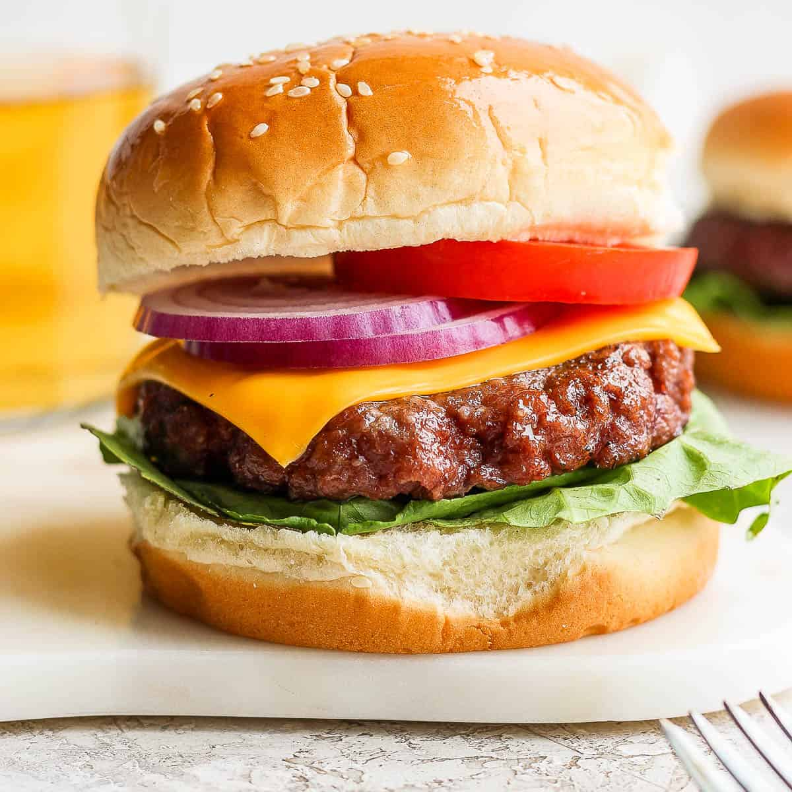

Yummy Burgers!

This is my recipe for delicious, yummy, burgers! Please take a look!
Ingredients
- Burger Buns (brioche)
- Ground Beef
- Lettuce
- Tomato
- Red Onion
- Cheddar Cheese
- Mayonaise
Steps
- Slice and chop vegetables into preferred portions
- Take your desired beef amount and form a ball
- Place beef ball in a pan over medium head, using a spatula press on the ball to flatten and form the burger
- Cook for 4 Minutes then flip to other side
- Once flipped place 1 slice of cheese on burger and cook for another 4 minutes
- During this, toast bun if desired in toaster, once toasted spread mayo on bun
- After 4 minutes have passed place burger on the bun, place your vegetables on top of the cheese, and enjoy!